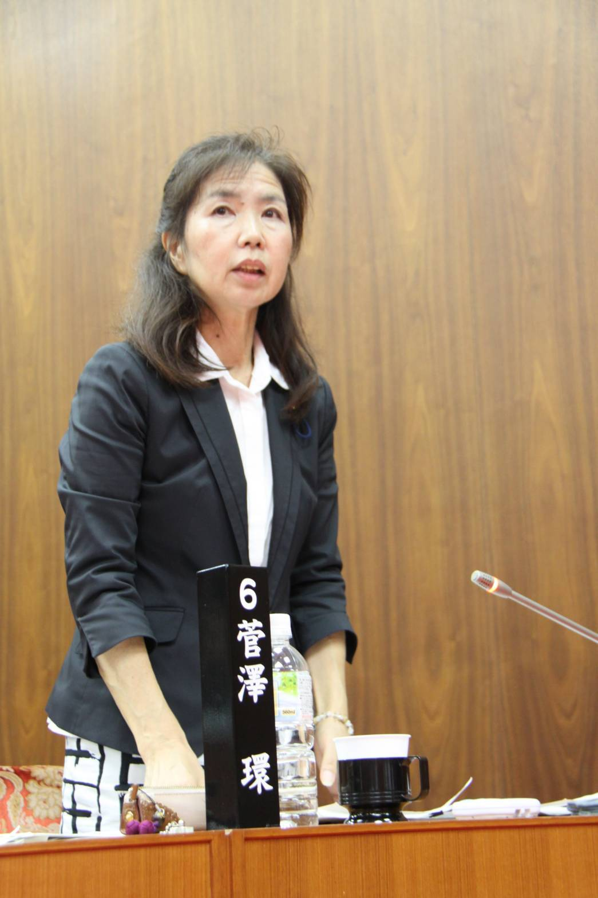

わが町、再生！
菅沢たまき
真心と強い覚悟で前進
多古町で大きな挑戦をします

経歴： 多古町議会議員 12年 (3期)
活動： NPO法人一新塾 第53期卒塾、赤松政経塾 在籍
私たちの声を届けたい、意見を伝えたいと、町民の代弁者として多古町の議員を務めてまいりました。
12年の間、ひとつずつひとつずつ、町民のための事業を実現し、力の限り町政に訴え続けました。
現在は多古町をより良く変えていきたいという思いで、広い視野を持つ多種多様な方々との学びを続けています。
今、成田空港の「第2の開港」という大きなチャンスを前に、この町を復活させるため、多古町の未来のため、新たな挑戦をさせていただきたいと決意いたしました。
皆様の力を結集し、多古町を再生させます!
既存のデマンドに加え「定時路線型」を新設し、通院・通学の利便性を高めます。
空港と一体化した物流拠点建設のため、地権者様との丁寧な合意形成を町が主導します。
多古インター周辺を整備し、道の駅からの人の流れを町中心部へ呼び込みます。
移転を余儀なくされる地区の皆様が、生活を存続できるよう手厚い支援を継続します。
スマート農業の普及に欠かせないインフラを町独自で整備し、生産効率を向上させます。

環境対応、高齢者の健康のために、デマンドの平日運行を要望し実現(平成29年 3月議会)